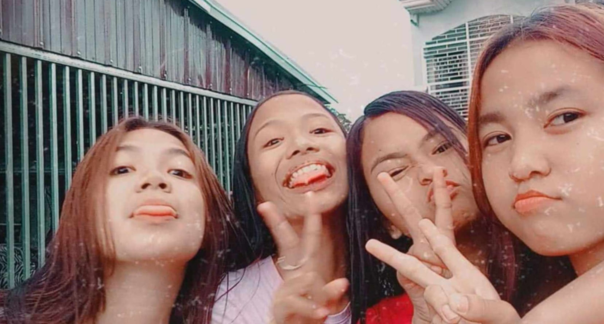
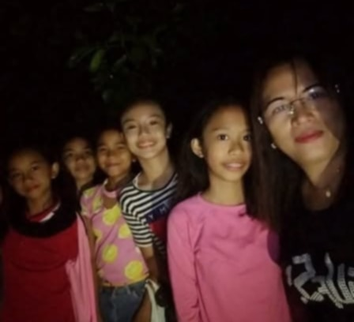
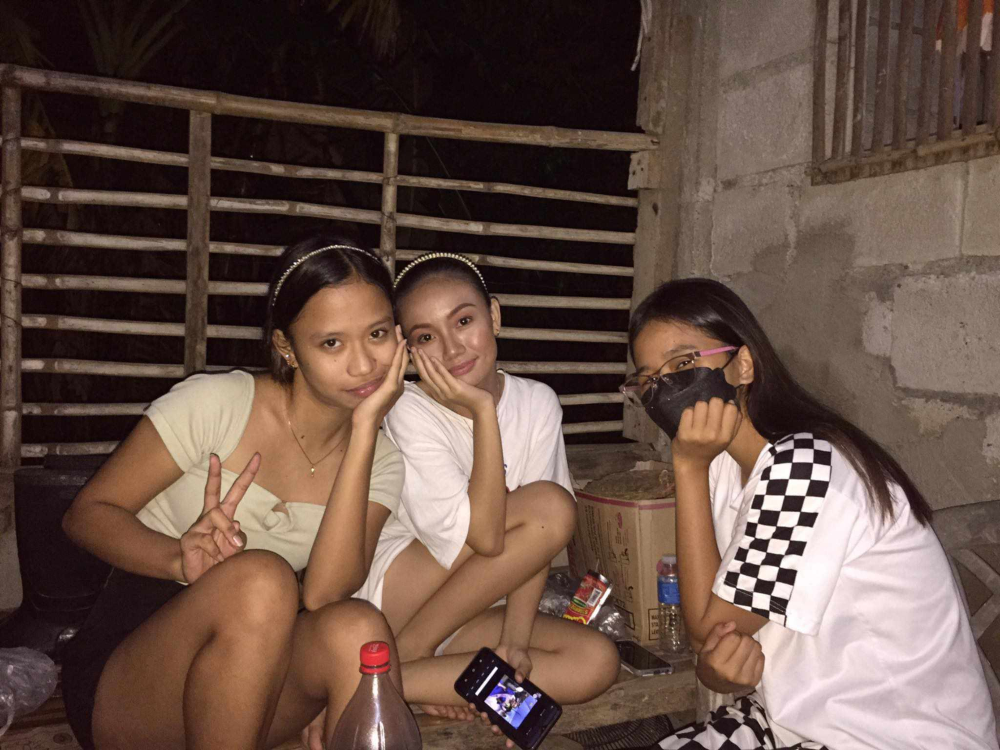
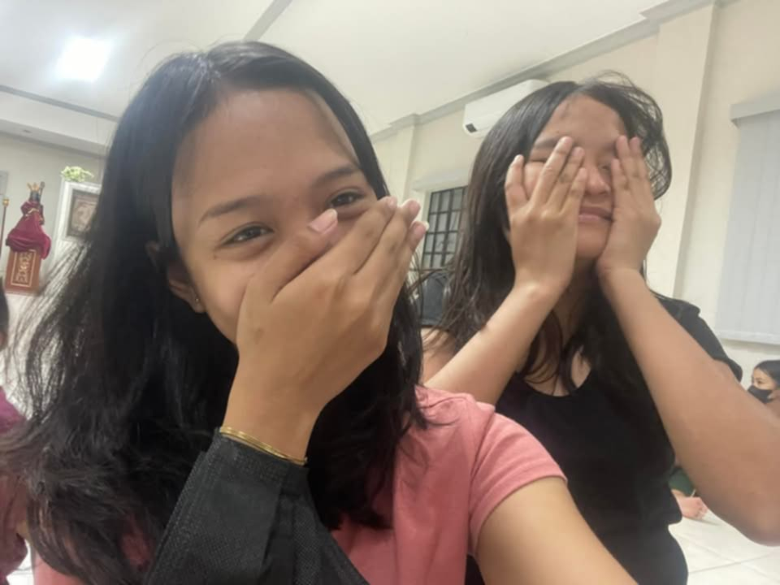
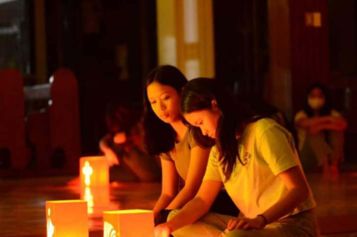

Happy
18th
Birthdayyy!!
Maria Divina, hello sayo. Pareho tayong mahilig sa drama, pero hindi naman sa ganitong paraan. 😆 Nagulat ka ba? Hahaha. Alam mo bata pa lang tayo, sobrang arte mo na. "Ayy, eto ang pinakamaganda," sabi ng mga lolo at lola natin habang nakaturo sila sayo. Naiinis naman ako noon kasi hindi ako naniniwala, hahaha.
Naaalala mo pa ba yung sabay tayong naliligo sa poso, nagpapakitaan ng bulbol, naliligo sa ulan at sa paliguan ng kalabaw, nagluluto-lutuan, nanghuhuli ng botete, tumatalon sa dayami, nakikipagsabunutan sa bukid? Ilan lang 'yan sa mga masasayang memories with you. My childhood was filled with unforgettable memories, genuine laughter, and pure happiness because you were there, and I will be forever grateful for that. 🥰
Ngayon, matanda na tayo, hindi ko mapigilang balikan kung paano tayo noon. Bukod sa pagpapaganda, pagkuha lang ng bigas sa tindahan niyo ang iniisip natin dati, hahaha. 😆 Thank you ha, sincere ako dito—salamat sa masasayang alaala, sa mga libreng walang sumbat, sa pagpapahiram ng damit kapag wala akong maisuot, sa pagpapaconnect ng wifi niyo, at higit sa lahat, salamat dahil naging parte ka ng buhay ko. 🫨 Cringe pakinggan hano? Wala kang choice, basahin mo pa rin. Hahaha 😂
Our bond may not be as strong as it used to be, and our closeness may not be the same as when we were kids, pero andito lang ako ha. I know you're strong at ang dami mo ng kinaya mag-isa, pero kapag hindi mo na keri, nasa likod ng bahay niyo lang ako. 😁 Alam ko na marami kang gustong sabihin pero hindi mo masabi at marami kang gustong gawin pero hindi mo magawa. You must know that I'm amazed at how you manage to overcome everything that makes you vulnerable and hate this world. Ang galing mo!! 🫵
Ang wish ko para sayo ay happiness. Sana'y maging masaya ka sa mga taong sinasamahan mo at sa mga bagay na ginagawa mo. Alam ko naman na magiging successful ka eh, ikaw pa ba? Kailangan mong magsumikap dahil maarte ka. Pagdating ng tamang oras, sana rin ay makahanap ka ng taong magmamahal sayo nang buo at iintindihin ka ng walang halong pag-aalinlangan. Dahil kahit si Divine na laging nakangiti, napapagod din at kailangan din ng sandalan. HAPPY 18TH BIRTHDAY, COUSHINNN! 😘💐
You're worthy and pretty enough to be loved unconditionally, so don't lower yourself for a guy who doesn't see the beauty in you and the beauty of having you. Love you, sis. 😘